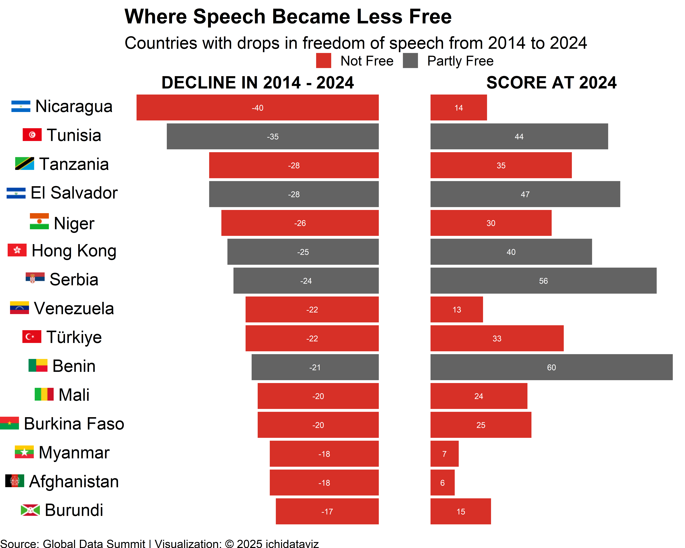

library(ggplot2)
library(dplyr)
Attaching package: 'dplyr'The following objects are masked from 'package:stats':
filter, lagThe following objects are masked from 'package:base':
intersect, setdiff, setequal, unionlibrary(forcats)
library(tidyr)
library(ggtext)
# Original data
df <- data.frame(
Country = c("Nicaragua", "Tunisia", "El Salvador", "Tanzania", "Niger",
"Hong Kong", "Serbia", "Türkiye", "Venezuela", "Benin",
"Burkina Faso", "Mali", "Afghanistan", "Myanmar", "Burundi"),
ISO2 = c("ni", "tn", "sv", "tz", "ne",
"hk", "rs", "tr", "ve", "bj",
"bf", "ml", "af", "mm", "bi"),
Status = c("Not Free", "Partly Free", "Partly Free", "Not Free", "Not Free",
"Partly Free", "Partly Free", "Not Free", "Not Free", "Partly Free",
"Not Free", "Not Free", "Not Free", "Not Free", "Not Free"),
Decline_2014_2024 = c(-40, -35, -28, -28, -26,
-25, -24, -22, -22, -21,
-20, -20, -18, -18, -17),
Score_2024 = c(14, 44, 47, 35, 30,
40, 56, 33, 13, 60,
25, 24, 6, 7, 15)
)
df$flag_url <- paste0("https://flagcdn.com/w40/", df$ISO2, ".png")
df$Country_with_flag <- paste0(
"<span style='display:inline-block; width:28px;'><img src='", df$flag_url,
"' width='20' valign='middle'></span>",
"<span style='vertical-align:middle;'> ", df$Country, "</span>"
)
df_long <- df %>%
select(Country, Country_with_flag, Status, Decline_2014_2024, Score_2024) %>%
pivot_longer(cols = c(Decline_2014_2024, Score_2024),
names_to = "Metric",
values_to = "Value") %>%
mutate(
Metric = recode(Metric,
Decline_2014_2024 = "DECLINE IN 2014 - 2024",
Score_2024 = "SCORE AT 2024"),
fill_factor = Status
)
df_long <- df_long %>%
mutate(Country_with_flag = fct_reorder(Country_with_flag, Value, .fun = min, .desc = TRUE))
fill_colors <- c(
"Not Free" = "#d73027",
"Partly Free" = "#636363"
)
ggplot(df_long, aes(x = Country_with_flag, y = Value, fill = fill_factor)) +
geom_col(show.legend = TRUE) +
geom_text(aes(label = Value),
position = position_stack(vjust = 0.5), size = 3, color = "white") +
coord_flip() +
scale_fill_manual(
values = fill_colors,
breaks = c("Not Free", "Partly Free"),
labels = c("Not Free", "Partly Free"),
guide = guide_legend(title = NULL)
) +
facet_wrap(~ Metric, scales = "free_x", nrow = 1) +
labs(
title = "Where Speech Became Less Free",
subtitle = "Countries with drops in freedom of speech from 2014 to 2024",
x = NULL,
y = "Score / Decline",
caption = "Source: Global Data Summit | Visualization: © 2025 ichidataviz",
fill = NULL
) +
theme_void(base_size = 18) +
theme(
axis.text.y = ggtext::element_markdown(),
plot.title = element_text(face = "bold"),
axis.ticks.y = element_blank(),
strip.text = element_text(face = "bold", size = 18),
panel.spacing = unit(2, "lines"),
legend.position = "top",
plot.caption = element_text(size = 12, hjust = 0, vjust = 0),
plot.caption.position = "plot"
)